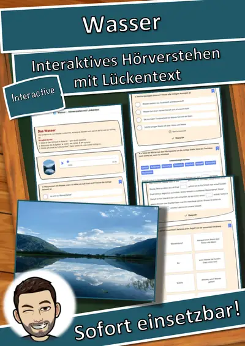

Was eine Gemeinde alles leistet – von Wasser bis Winterdienst – Lesespurgeschichte mit Rätselaufgaben (Klasse 6)
Was eine Gemeinde alles leistet – von Wasser bis Winterdienst – Lesespurgeschichte Sozialkunde (Klasse 6)Schick deine Klasse auf eine Lesespur durch eine verschneite Gemeinde! Paula und Jakob aus der 6a erkunden mit ihrer Lehrerin und der Bürgermeisterin, was ihre Gemeinde jeden Tag leistet: Am Rathausplatz geht es um die Selbstverwaltung, im Wasserwerk und in der Kläranlage um sauberes Wasser, im Bauhof um den Winterdienst, am Feuerwehrhaus und an der Grundschule um weitere Pflichtaufgaben – und in Bücherei, Hallenbad und Jugendtreff um freiwillige Aufgaben. Am Ende jedes Abschnitts verrät ein Hinweis den nächsten Ort auf dem Plan – nur wer genau liest, findet den Weg und sammelt alle geheimen Buchstaben zum Lösungswort.
Die perfekte Lesespur für Sozialkunde und GPG in der 6. Klasse – ideal für das Thema Gemeinde und kommunale Selbstverwaltung, für den Winter, für Vertretungsstunden und fächerübergreifend mit Deutsch und Mathematik. Das Material ist SOFORT EINSETZBAR und in DREI DIFFERENZIERUNGSSTUFEN (leicht ★ / mittel ★★ / schwer ★★★) angelegt.WICHTIG: Das komplette Material ist sowohl in FARBE als auch in SCHWARZ-WEISS enthalten – ideal zum Sparen von Druckkosten.DAS IST ENTHALTEN
- Lesespurgeschichte in 3 Niveaus (leicht, mittel, schwer)
- farbiger Plan als Suchkarte
- Hörverstehen mit QR-Code zur MP3 (selbstständiges Hören mit Kopfhörern)
- vier Aufträge auf dem Weg: eine Zuordnung, ein Quiz, eine Rechenaufgabe und ein Steckbrief
- Rätselseite (Wörter-Suchsel + Fragen rund um die Gemeinde)
- Ausmalbild zum Thema
- ausführliches Lösungsblatt für die Lehrkraft
- alles zusätzlich als komplette Schwarz-Weiß-VarianteSO GEHT DIE LESESPURDie Schülerinnen und Schüler lesen ab START, finden im Text den nächsten Ort, suchen ihn auf dem Plan und lesen bei dieser Station weiter. An jeder richtigen Station gibt es einen Buchstaben. Eingeplante Sackgassen (Kino, Bushaltestelle, Supermarkt, Friseur) sind keine Stationen und dienen der Selbstkontrolle. Am Ende werden die gesammelten Buchstaben umgestellt und ergeben ein geheimes Lösungswort. (Die Lösungen sind selbstverständlich nur im Lösungsblatt für die Lehrkraft enthalten.)INHALTLICHER SCHWERPUNKTDie Gemeinde: kommunale Selbstverwaltung durch Gemeinderat und Bürgermeisterin; Pflichtaufgaben (Trinkwasser, Abwasser, Feuerwehr, Gemeindestraßen und Winterdienst, Schulgebäude) und freiwillige Aufgaben (Bücherei, Hallenbad, Jugendtreff); Finanzierung durch Steuern und Gebühren; Mitwirkung von Kindern und Jugendlichen.ABGEDECKTER LEHRPLAN (Klasse 6)
- Geschichte/Politik/Geographie (LehrplanPLUS Bayern, Mittelschule) – Jahrgangsstufe 6, Politik und Gesellschaft: Aufgaben der Gemeinde, kommunale Selbstverwaltung, Möglichkeiten der Mitwirkung.
- Mathematik – Jahrgangsstufe 6: Sachaufgaben mit Multiplikation und Subtraktion.
- Deutsch – Jahrgangsstufe 6: Sachtexte sinnentnehmend lesen; Zuhören: einem Hörtext gezielt Informationen entnehmen (Hörverstehen mit MP3).Geeignet für Freiarbeit, Stationenlernen, Vertretungsstunden, Wochenplan und als Vorbereitung auf eine Rathaus-Erkundung. Klassenstufe 6.
Ähnliche Materialien

Der Winterdienst – Lesespurgeschichte mit Rätselaufgaben (Klasse 3)

Gemeinde – Hörverstehen mit Lückentext (interaktiv)

Gemeinde Lückentext mit Wortspeicher Hörverstehen und Suchsel

Die Kläranlage – Lesespurgeschichte mit Rätselaufgaben (Klasse 8)

Wasser – Hörverstehen mit Lückentext (interaktiv)

Weltwassertag – das versteckte Wasser in Alltagsdingen – Lesespurgeschichte mit Rätselaufgaben (Klasse 7)

Wasser Lückentext mit Wortspeicher Hörverstehen und Suchsel